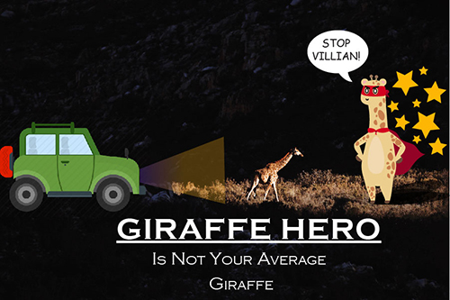

Illustrator/Vector Project
This vector assignment allowed me to create a character I have been wanting to make for a while now. This was a fun and frustrating experience. I loved the way my giraffe hero character came out. My most frustrating moment was trying to find the right expression for my character and also keeping track of the working layers.